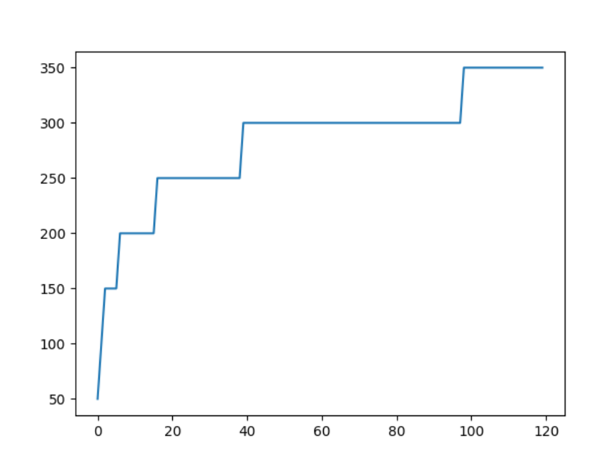
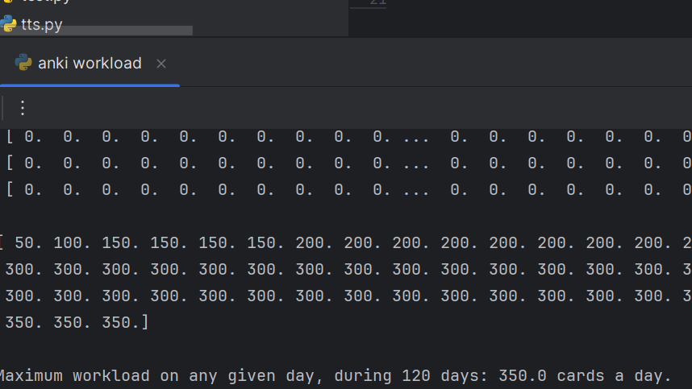

Calculate and visualize daily Anki flashcard review workload over a set duration, using an exponential distribution to determine workload for each day.
Generate exponential values (powers of 2.5) for specific days, distribute cards accordingly, and visualize the daily workload over time.
The script computes the workload for each day and displays the maximum workload. A graph visualizes the changes in workload across 120 days.
it’s limited to fixed duration and card values.
Personalization: Adapt the model for individual review patterns. Optimization: Improve workload distribution with dynamic adjustments. UI/UX: Create an interface for customizable parameters.